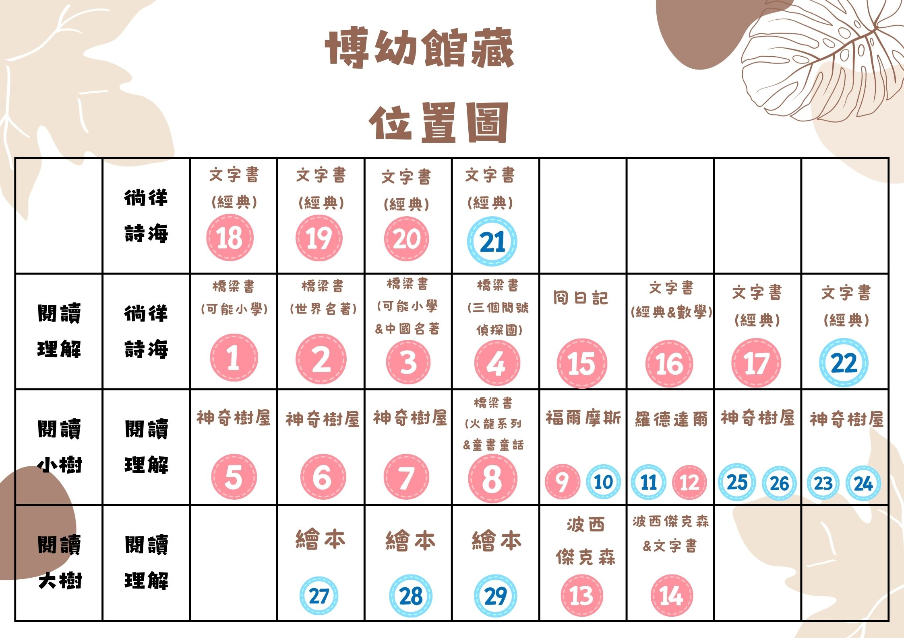

博幼圖書館管理系統
訪客
登入
登出
全部類別
繪本 (A)
橋梁書 (B)
文字書 (C)
繪本 (A)
橋梁書 (B)
文字書 (C)
按書名排序
按書碼排序
按年份排序
按類別排序
升冪
降冪
博幼藏書
位置圖
系統設定
Google Sheets 同步
從 Google Sheets 載入
匯入 Excel 書單
新增館藏
一鍵搜尋封面
重新載入 CSV
自動更新
重置資料
0
總館藏
0
不重複書名
0
可借閱
0
已借出
最後更新：從未更新
自動更新已啟動
館藏列表
借閱記錄
匯出 Excel
×
登入系統
使用者名稱：
角色：
訪客
學生
老師/館員
登入
×
博幼館藏位置圖

×
新增館藏
類別：
A（繪本）
B（橋梁書）
C（文字書）
選擇類別後會自動生成下一個可用書碼
書碼：
書碼首字母決定類別：A=繪本, B=橋梁書, C=文字書
書名：
作者：
封面網址：
出版年份：
冊數：
同一本書的複本數量
取消
自動搜尋
新增書籍
×
編輯書籍
書碼：
書碼與借閱紀錄關聯，為避免錯亂暫不提供修改。
書名：
搜尋
作者：
封面網址：
出版年份：
冊數：
冊數不得小於目前已借出的數量。
取消
自動搜尋
儲存變更
×
系統設定
借閱天數：
訪客可借閱：
預設冊數：
預設年份：
儲存設定
×
Google Sheets 同步
Apps Script Web App URL：
需先部署 Google Apps Script 成 Web App，並允許存取。此功能會同步：館藏、博幼藏書、借閱資料。
從線上下載
上傳到線上
×
一鍵搜尋封面
搜尋範圍：
全部書籍
指定範圍
按類別
起始書碼：
結束書碼：
類別：
繪本 (A)
橋梁書 (B)
文字書 (C)
搜尋類型：
搜尋封面
搜尋作者
取消
開始搜尋
搜尋進度
目前處理：
-
進度：
0
/
0
成功：
0
| 失敗：
0
暫停
繼續
停止